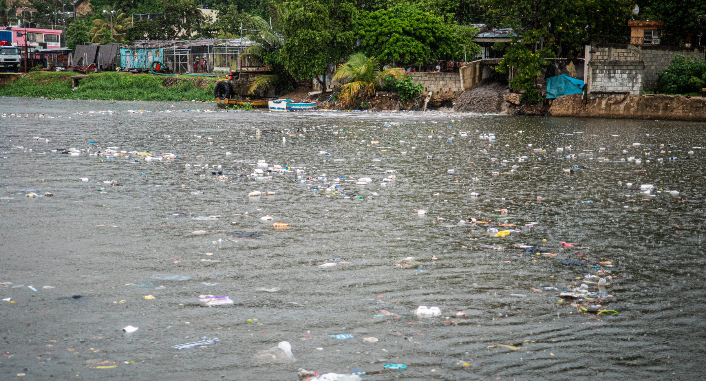
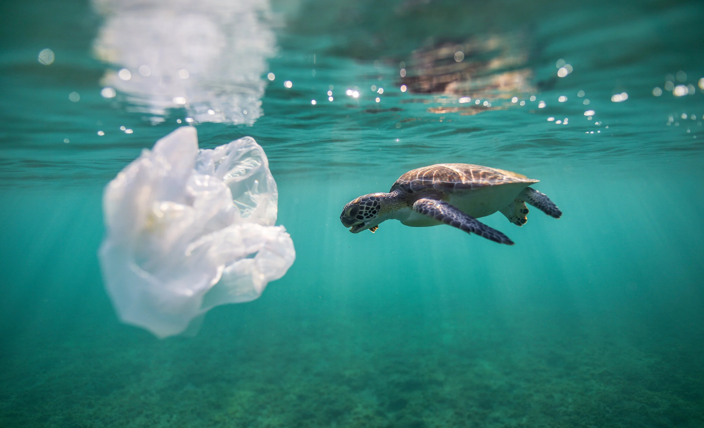
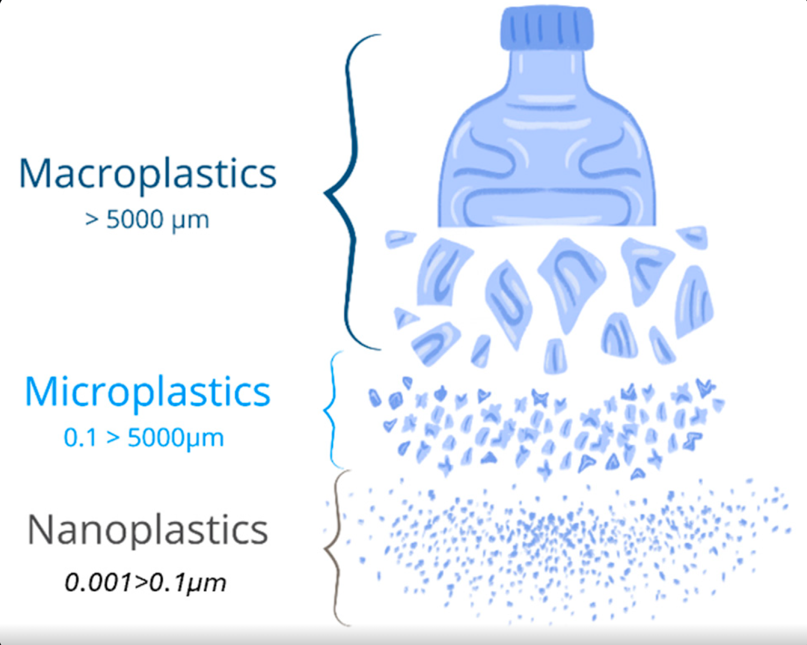
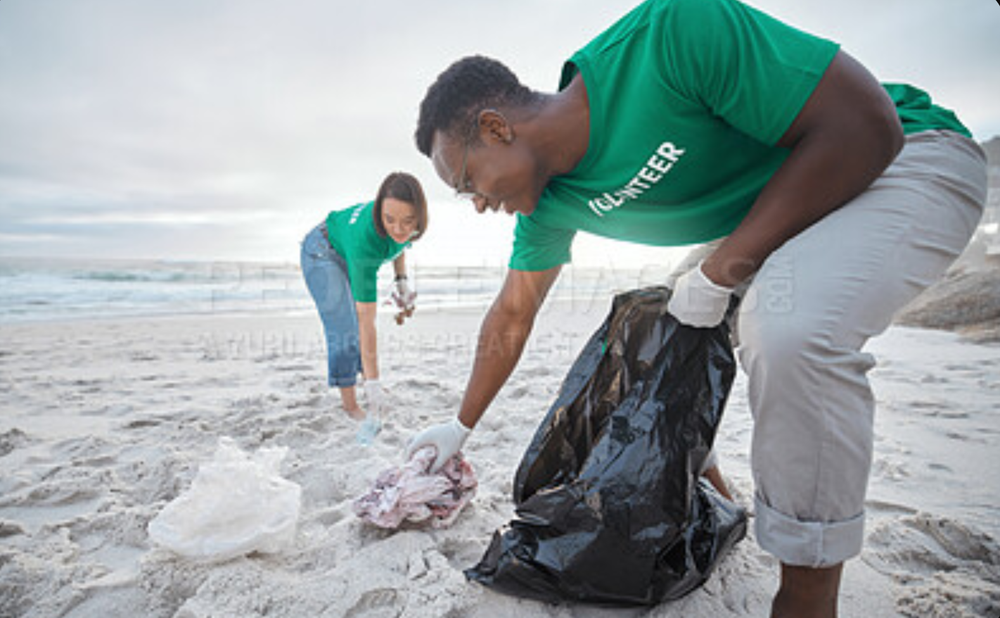

Marine Plastic Pollution: From Awareness to Everyday Action
Every year, huge amounts of plastic waste reach the ocean from cities, rivers and coastlines. This page unpacks where that plastic actually comes from, what it does to marine life once it's there, and — most importantly — what realistic actions individuals, students and communities can take to be part of the solution. It builds directly on the choices you can explore in our Action Impact Simulator.
Where Does Ocean Plastic Actually Come From?
It's tempting to picture ocean plastic as something that starts at sea, but most of it begins its journey on land. Everyday packaging, drink bottles, food wrappers and shopping bags that aren't collected or recycled properly get blown, washed or dumped into drains, streams and rivers. From there, it's carried downstream until it reaches the coast and, eventually, the open ocean.
A smaller but significant share comes directly from activity at sea itself:
- Abandoned or lost fishing nets and lines, often called "ghost gear"
- Waste discarded from cargo ships, ferries and fishing vessels
- Debris from coastal industry and poorly managed landfill sites near the shore
The common thread across almost all of these sources is management, not the material itself — plastic that is properly collected, sorted and recycled rarely ends up in the sea. It's the gaps in that system, at home and at sea, that this page focuses on.


The Ripple Effect: Impact on Marine Life and People
Once plastic enters the water, it doesn't just sit still — it drifts with currents, gets tangled in reefs, washes back onto beaches, and is mistaken for food by a huge range of marine animals. Turtles can confuse floating plastic bags for jellyfish, while seabirds and fish often ingest small fragments that fill their stomachs without providing any nutrition.
Larger items like discarded nets and packaging bands can physically entangle animals, restricting movement or causing injury. Beyond individual animals, this damages entire ecosystems: coral reefs get smothered, seagrass meadows are disrupted, and the balance of species that coastal communities depend on for food and income starts to shift.
This isn't just an "ocean problem" — coastal fishing and tourism industries, which millions of people rely on for their livelihoods, are directly affected when marine environments degrade.
Microplastics: The Threat You Can't See
Over time, sunlight, waves and friction break larger plastic items down into tiny fragments known as microplastics — generally smaller than 5mm. Unlike a floating bottle, these fragments are almost invisible once they're in open water, which makes them far harder to clean up or even track.
Microplastics are now found throughout the marine food chain, from plankton at the very bottom up through the fish and shellfish that end up on our plates. Because they're so small and widespread, they're also extremely difficult to remove once they're in the water column — prevention at the source matters far more here than cleanup after the fact.
This is part of why the choices covered in the next section — reducing single-use plastic before it ever becomes waste — have a bigger long-term effect than beach cleanups alone.

What You Can Actually Do About It
None of this means individual choices don't matter — they add up, especially when made consistently. Some of the most realistic, everyday actions include:
- Switching to a reusable water bottle and shopping bag instead of single-use plastic
- Sorting recycling correctly so packaging actually gets processed rather than landfilled
- Choosing products with minimal or plastic-free packaging where possible
- Joining or organising a local beach or riverbank cleanup
- Choosing sustainably sourced seafood to support responsible fishing practices
None of these require major lifestyle changes — they're small, repeatable habits that compound over time, which is exactly the idea behind the simulator below.

See Your Own Impact
Curious how much these everyday actions actually add up to? Try the Action Impact Simulator to pick your own set of actions and see your personal impact score.
Open the SimulatorTurning This Into Local & Student Action
Beyond personal habits, students and local communities are in a strong position to push for bigger changes nearby:
On Campus
- Push for reusable cups and reduced plastic packaging in canteens
- Set up a termly student-led beach or riverbank cleanup
- Run a short awareness stand during Freshers' or an open day
In Your Local Area
- Join an existing local cleanup or conservation group
- Support local shops that offer plastic-free or refill options
- Report visible pollution hotspots to your local council
Looking Ahead
- Consider modules, placements or careers in environmental science or policy
- Share what you learn here with friends and family — awareness spreads fastest person to person
- Keep track of the small actions you already take using the Simulator
None of this requires waiting for a perfect, large-scale fix — the combination of small personal habits and local pressure for better systems is exactly how meaningful change around SDG 14 actually happens.